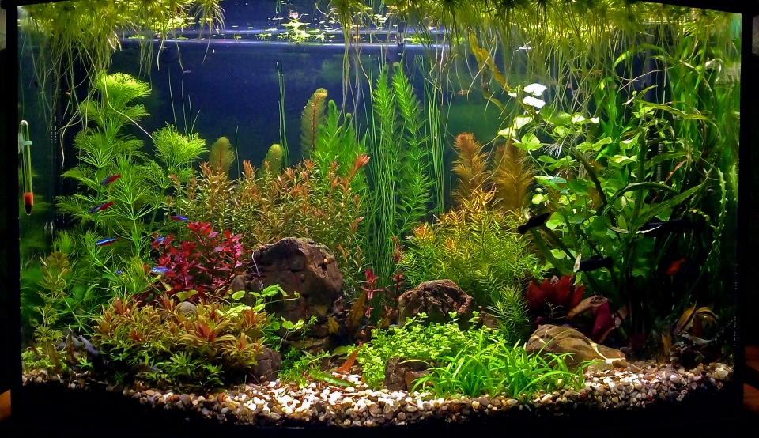

31.03.2018
Подача газу найбільше лякала – та ще морока. Тому для початку обрав долив мінералки за АТБ. І через пару тижнів почалося! :) Ймовірно все подіяло у комплексі: газ + підміна води + добрива. Прокинулися всі рослини! Щодня можна було спостерігати пірлінг! :) Почало все заростати.
В цей же період вирішив позбутися частини великої риби – насамперед з великими ротами! :) Річ у тім, що ще 2 місяці тому придбав 20 неокардінок. Але побачити їх було складно – ховалися від риби. Тому скалярія, барбуси та меченосці були віддані. І вже наступного дня почали вилазити креветки! :) Через тиждень вони вже майже не лякалися і вільно паслися на рослинах та камінні. А замість злої риби придбав молодь мікрорасбор галактик.
Також позбувся фільтру Fluval 204. Я не знав як із ним впоратися. Після попередньої чистки він стояв у мисці 3 дні поки не припинив підтікати з під голови. А після чистки у березні так і не зміг підлаштувати голову так, аби не текла. Танці навколо нього набридли, тому купив JBL CristalProfi e902. І з того часу забув, що є фільтр.